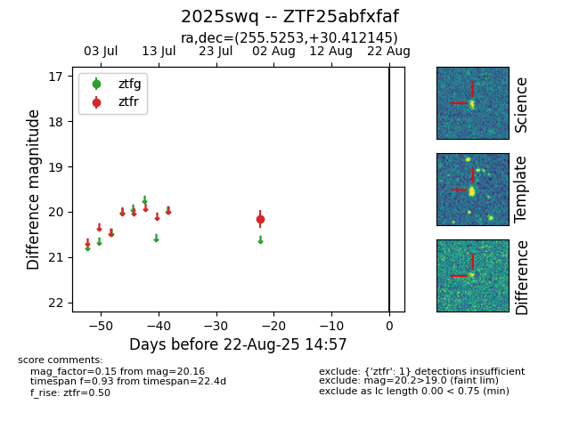

Target 2025swq at 2025-08-21 09:29, see:
FINK: fink-portal.org/ZTF25abfxfaf
Lasair: lasair-ztf.lsst.ac.uk/objects/ZTF25abfxfaf
ALeRCE: alerce.online/object/ZTF25abfxfaf
TNS: wis-tns.org/object/2025swq
YSE: ziggy.ucolick.org/yse/transient_detail/2025swq
alt names
ZTF25abfxfaf (ztf,alerce)
2025swq (tns,yse)
coordinates:
equatorial (ra, dec) = (255.5253,+30.41215)
galactic (l, b) = (52.3430,+35.68028)
photometry
last ztfr=20.16
1 ztfr detections
